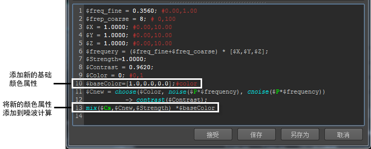
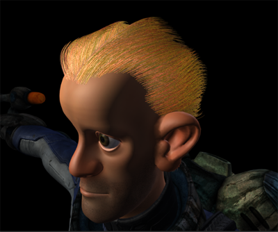

可以使用噪波表达式改变头发颜色。在此示例中，使用表达式将根颜色与由 XGen 头发现象着色器设置的头发基础颜色融合。
- 单击 root_color 参数旁边的此
 图标。
图标。
在此示例中，噪波表达式将添加到 root_color 参数中。
- 在“XGen 表达式编辑器”(XGen Expression Editor)中，单击“采样数”(Samples)选项卡。
- 在“采样数”(Samples)下，单击 + 以展开“全局”(Global)，然后再次单击以展开“颜色”(Color)。
- 从显示的表达式列表中，选择 noiseE。
噪波表达式将显示在编辑器中。
- 在“XGen 表达式编辑器”(XGen Expression Editor)的文本字段中，执行以下操作：
- 在行 10 中，键入：
$baseColor=[1.0,0.0,0.0]; #color
这指定 root_color 参数现在用作表达式的基础颜色属性。
- 在行 13 的 mix($Cs,$Cnew,$Strength) 后，键入 * $baseColor。
基础颜色值会被添加到噪波计算中。
 - 在行 10 中，键入：
- 单击“XGen 表达式编辑器”(XGen Expression Editor)中的样例来验证表达式。
- （可选）在“属性编辑器”(Attribute Editor)的“自定义着色器参数”(Custom Shader Parameters)部分中，使用编辑器中的滑块在表达式中修改噪波图案。
例如，将 freq_fine 设置为 0.356，并将 freq_coarse 设置为 8。
- 单击“接受”(Accept)。
- 渲染描述。
